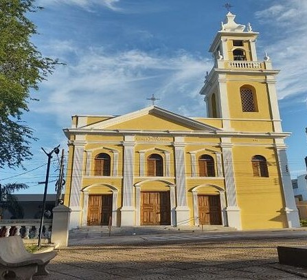

Um dos mais importantes conjuntos históricos do Centro-Oeste brasileiro, marcado pela arquitetura, pelo comércio fluvial e pela memória urbana.

de história preservada
cultural e arquitetônico
e desenvolvimento urbano
da navegação fluvial
Localizado às margens do rio Paraguai, o Casario do Porto Geral de Corumbá constitui um expressivo conjunto arquitetônico formado entre a segunda metade do século XIX e o início do século XX, período de intensa atividade econômica na região.
As edificações estão diretamente relacionadas ao desenvolvimento do comércio fluvial internacional, quando Corumbá se consolidou como um dos principais entrepostos comerciais da Bacia do Prata.
Fonte: IPHAN, 2026

O conjunto urbano reflete o auge econômico vivido por Corumbá no final do século XIX, impulsionado pela navegação fluvial e pelas relações comerciais internacionais.
A Guerra do Paraguai marcou profundamente a cidade, resultando na destruição de parte das edificações. A reconstrução posterior evidencia a retomada econômica da região.
Fonte: IPHAN, 2026As edificações apresentam características da arquitetura eclética, com influências europeias adaptadas às condições locais.
Elementos ornamentais, fachadas alinhadas ao passeio público e diferentes usos urbanos compõem a identidade visual do conjunto histórico.
Fonte: IPHAN, 2026
Conheça os edifícios, sua história e a importância do Casario do Porto para a formação da cidade.
Explorar Acervo